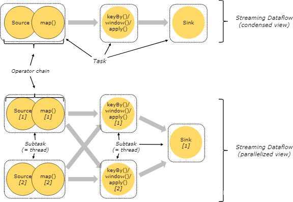
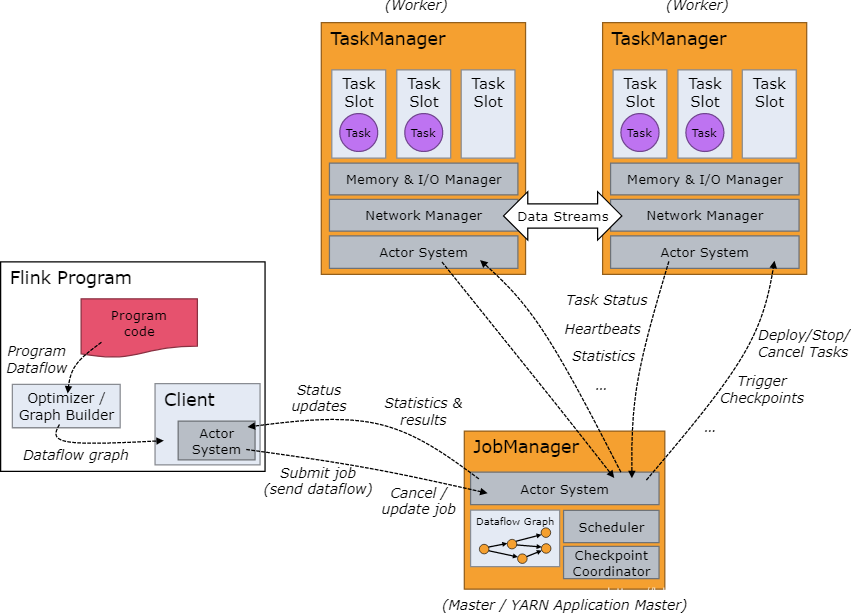
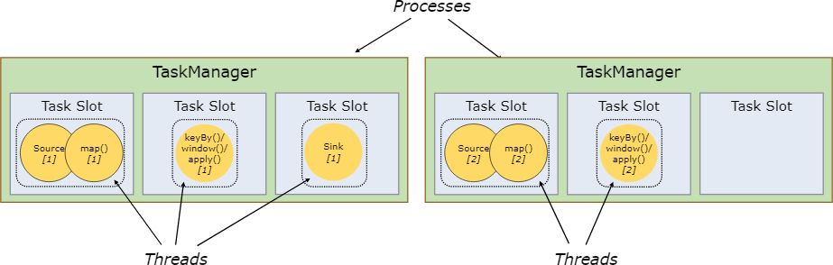
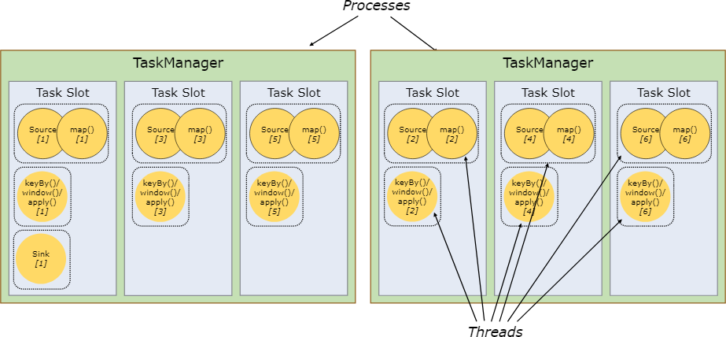
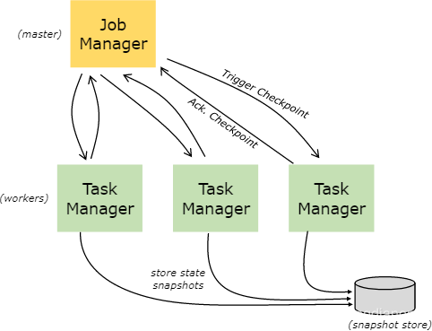

基本概念
| 名称 | 含义 |
|---|---|
| Flink Application Cluster | Flink应用程序集群是专用的Flink集群，它仅执行一个Flink作业。Flink集群的生存期与Flink作业的生存期绑定在一起。与Flink Session Cluster比较，在工作模式下，以前的Flink应用程序集群也称为Flink集群 。 |
| Flink Cluster | 一个分布式系统，通常由一个Flink Master和一个或多个Flink TaskManager进程组成。 |
| Event | 事件是有关由Application建模的域的状态更改的声明。事件可以是流或批处理应用程序的输入和/或输出。事件是特殊类型的记录。 |
| ExecutionGraph | 参见 Physical Graph |
| Function | 功能由用户实现，并封装Flink程序的应用程序逻辑。大多数功能由相应的运算符包装 。 |
| Instance | 术语实例用于描述特定类型的（通常的特定实例 操作或功能在运行期间）。由于Apache Flink主要是用Java编写的，因此它对应于Java中的Instance或Object的定义。在Apache Flink的上下文中，术语“ 并行实例”也经常用来强调相同操作符或函数类型的多个实例正在并行运行。 |
| Flink Job | Flink作业是Flink程序的运行时表示形式。Flink作业既可以提交到长期运行的Flink Session Cluster，也可以作为独立的Flink Application Cluster启动。 |
| JobGraph | 参见 Logical Graph |
| Flink JobManager | JobManager是Flink Master中运行的组件之一。JobManager负责监督单个作业的任务执行。历史上，整个Flink Master都称为JobManager。 |
| Logical Graph | 逻辑图是描述流处理程序的高级逻辑的有向图。节点是运算符，边缘指示输入/输出关系或数据流或数据集。 |
| Managed State | 受管状态描述了已在框架中注册的应用程序状态。对于受管状态，Apache Flink将处理持久性和重新调整大小等问题。 |
| Flink Master | Flink Master是Flink群集的主机。它包含三个不同的组件：Flink资源管理器Resource Manager，Flink调度程序Dispatcher 和 每个运行中的Flink job有一个 Flink JobManager。 |
| Operator | Logical Graph的节点。操作员执行某种操作，通常由Function执行。源和接收器是用于数据摄取和数据出口的特殊运算符。 |
| Operator Chain | 一个操作员链由两个或多个连续的操作员组成，中间没有任何重新分配。同一操作员链中的操作员无需经过序列化或Flink的网络堆栈即可直接将记录彼此转发。 |
| Partition | 分区是整个数据流或数据集的独立子集。通过将每个记录分配给一个或多个分区，将数据流或数据集划分为多个分区。Tasks在运行时使用数据流或数据集的分区。改变数据流或数据集分区方式的转换通常称为重新分区。 |
| Physical Graph | 物理图是转换逻辑图 Logical Graph 以在分布式运行时中执行的结果。节点是Tasks，边缘指示数据流或数据集的输入/输出关系或分区。 |
| Record | Record 是数据集或数据流的组成元素。运算符和 函数接收记录作为输入，并发出记录作为输出。 |
| Flink Session Cluster | 长期运行的Flink群集，它接受多个Flink作业来执行。此Flink群集的生存期未绑定到任何Flink作业的生存期。以前，Flink会话群集在会话模式下也称为Flink群集。与Flink应用程序集群进行比较 。 |
| State Backend | 对于流处理程序，Flink作业的状态后端确定如何在每个TaskManager（TaskManager的Java堆或（嵌入式）RocksDB）上存储其 状态，以及在检查点上写入状态的位置（Flink Master或文件系统的Java堆） ）。 |
| Sub-Task | 子任务是负责处理数据流分区的任务。术语“子任务”强调针对同一操作员或操作员链有多个并行任务 。 |
| Task | 物理图Physical Graph的节点。任务是基本工作单元，由Flink的运行时执行。任务恰好封装了一个操作员或操作员链的并行实例 。 |
| Flink TaskManager | TaskManager是Flink群集的工作进程。任务安排在TaskManager中执行。它们彼此通信以在后续任务之间交换数据。 |
| Transformation | 将转换Transformation 应用于一个或多个数据流或数据集，并产生一个或多个输出数据流或数据集。转换可能会更改每个记录的数据流或数据集，但也可能仅更改其分区或执行聚合。虽然 运算符和函数是Flink API的“物理”部分，但转换Transformation 只是API概念。具体来说，大多数（但不是全部）转换是由某些运算符实现的。 |
| # Tasks 和 Operator Chains | |
| 在分布式执行中，flink链操作子task一起放入task。每个task由一个线程执行。将操作链链接到task是一种优化，减少了线程到线程的切换和缓冲的开销，并且降低延迟的同时提高了总体吞吐量。 |
下图中的示例数据流由五个子task执行，因此由五个并行线程执行。

Job Managers，Task Managers，Clients
Flink运行的时候由两种类型的进程组成：
- JobManagers：也可以称为masters，调节分布式执行，比如：协调任务，调节检查点，协调故障恢复等。一个集群中至少有一个JobManager，高可用下可以有多个JobManager，一个是主，其他的都是备。
- TaskManagers：也可以称为workers，执行数据流的任务（子task），缓冲和交换数据流。必须至少有一个TaskManager
- Task Slots:
一个有3个插槽的TM，会将其托管内存均分三个taskslot，通过调整插槽数，用户可以 定义任务之间如何隔离，相同的JVM的任务共享TCP连接以及心跳信息，还可以共享数据集和数据结构，从而减少每个任务的开销 - Tasks:
将一些操作符的一些任务链接到一起，放到一个任务中执行，这样的话 减少了线程间的切换以及缓冲的开销，增加吞吐量，降低延迟
- Task Slots:
JobManagers和TaskManagers可以以多种方式启动:直接在机器上作为独立集群启动（ standalone cluster），或者在容器中启动，或者由诸如yarn或Mesos之类的资源框架管理。JobManagers连接到TaskManagers，宣布自己可用，并分配工作。
client不是运行时和程序执行的一部分，而是用于准备和向JobManager发送数据流。之后，客户端可以断开连接，或保持连接以接收进度报告。客户端可以作为触发执行的Java/Scala程序的一部分运行，也可以在命令行进程中运行。

Task Slots 和 Resources
每个worker (TaskManager)都是一个JVM进程，可以在单独的线程中执行一个或多个子task。为了控制worker接受多少task，worker具有所谓的Task Slots(至少一个)。
每个Task Slot表示TaskManager资源的一个固定子集。例如，一个有三个Slots 的JobManager会将其1/3的托管内存分配给每个Slots。对Resources进行Slots意味着子task不会与来自其他作业的子task争夺托管内存，而是拥有一定数量的预留托管内存。注意，这里没有发生CPU隔离;当前Slots 只分隔任务的托管内存。
通过调整Task Slots的数量，用户可以定义子task如何彼此隔离。每个TaskManager有一个Slot意味着每个task组运行在单独的JVM中(例如，可以在单独的容器中启动JVM)。拥有多个Slot意味着更多的子task共享同一个JVM。相同JVM中的任务共享TCP连接(通过多路复用)和心跳消息。它们还可以共享数据集和数据结构，从而减少每个任务的开销。

默认情况下，Flink允许子任务共享slots，即使它们是不同task的子task，只要它们来自相同的作业。结果是一个slot可以容纳作业的整个管道。允许这个插槽共享有两个主要好处:
- Flink集群需要的task slots与作业中使用的最高并行度一样多。不需要计算一个程序总共包含多少任务(具有不同的并行度)。
- 更容易得到更好的资源利用。如果没有slots共享，非密集型source/map()子任务将阻塞与资源密集型窗口子任务一样多的资源。使用slots共享，将我们示例中的基本并行度从2提高到6，可以充分利用slots资源，同时确保繁重的子task在TaskManagers中得到公平分配。

这些api还包括一个资源组机制，可用于防止不需要的slot共享。
根据经验，一个好的默认任务槽数应该是CPU内核的数量。使用超线程，每个槽将接受2个或更多的硬件线程上下文。
State Backends
存储 键/值 索引的确切数据结构取决于所选的State Backends(状态后端)。一个状态后端将数据存储在内存中的散列映射中，另一个状态后端使用RocksDB作为 键/值 存储。除了定义保存状态的数据结构外，状态后端还实现了获取 键/值 状态的时间点快照的逻辑，并将该快照存储视为检查点的一部分。

Savepoints
在数据流API中编写的程序可以从保存点恢复执行。Savepoints(保存点)允许在不丢失任何状态的情况下更新程序和Flink集群。
Savepoint是手动触发的检查点，它获取程序的快照并将其写入状态后端。它们依赖于常规的检查点机制。在执行过程中，程序定期在工作节点上快照并生成检查点。对于恢复，只需要最后一个完成的检查点，而旧的检查点可以在新检查点完成时安全地丢弃。
Savepoint类似于这些定期检查点checkpoints ，但checkpoints 是由用户触发的，并且在更新的检查点完成时不会自动过期。checkpoints 可以从命令行创建保存点，也可以在通过REST API取消作业时创建保存点。
作业执行流程(拓扑结构)：
StreamGraph -> JobGraph -> ExceutionGraph -> 物理执行图
StreamGraph：
根据用户编写的Stream API代码生成的最初的图，表示程序的拓扑结构
JobGraph：
经StreamGraph优化后生成该图，提交JobMangager；
其中优化是：Chain Operators,把多个节点Chain一起节点，
可以减少数据在节点之间传输、序列化以及反序列化的一些开销
ExceutionGraph:
JobManager根据JobGraph生成该图，是最核心的数据结构
物理执行图：
根据ExceutionGraph对Job进行后，在每个TM(TaskManager)上部署Tasks形成的图